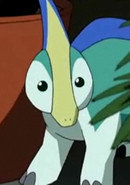

|
Michiru Kiryuu |
- Pretty Cure Splash Star
- Pretty Cure All Stars Movie DX2: Kibou no Hikari Rainbow Jewel o Mamore
|
Michiru Kiryuu is one of Saki and Mai friend. She was rude and cold but friendly. She has a sister named Kaoru. She gets along with Saki younger, Minori. |
 |
Moop |
- Pretty Cure Splash Star
- Pretty Cure Splash Star Tic-Tac Crisic Hanging by a Thin Thread
- Pretty Cure All Stars Movie DX: Minna Tomodachi Kiseki no Zenin Daishuugou
- Pretty Cure All Stars Movie DX2: Kibou no Hikari Rainbow Jewel o Mamore
- Pretty Cure All Stars Movie DX3: Reach the Future! The Rainbow Flower that Connects the World
|
Moop is the spirit of the moon. He serves as the power sourcesfor Cure Bright. He channels his power through Flappy to allow Saki to transform into Cure Bright. Moop has connection with Michiru. He has a crush on Fuup. |
|  |
Paris |
- Dinosaur King
- Dinosaur King D - Kids
|
Paris is a Parasaurolophus that is Zoe Drake's dinosaur companion. |
 |
Rod |
- Dinosaur King
- Dinosaur King D - Kids
|
Rod is Dr. Z's grandson. He is gifted with knowledge of science and oftens helps him grandfather with his inventions. |
| |
Sakiko |
|
Sakiko is a young girl who lives in hotel with her father. She is very lonely. |
 |
Yumemi Yumeno |
|
Yumemi Yumeno is a popular artist. Her painting that people owned could make their romantic dreams come true. She has low self-esteem and hides her identity from her fans. |